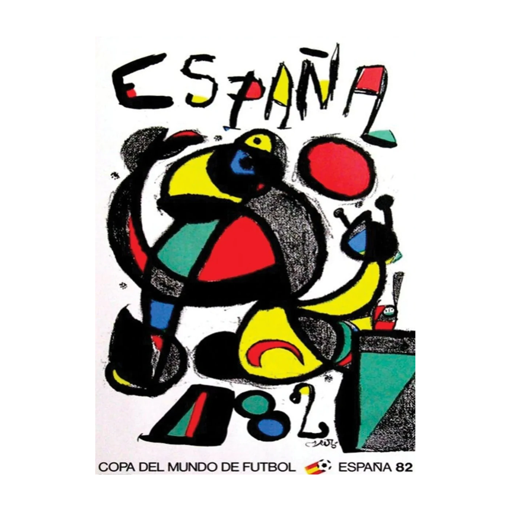
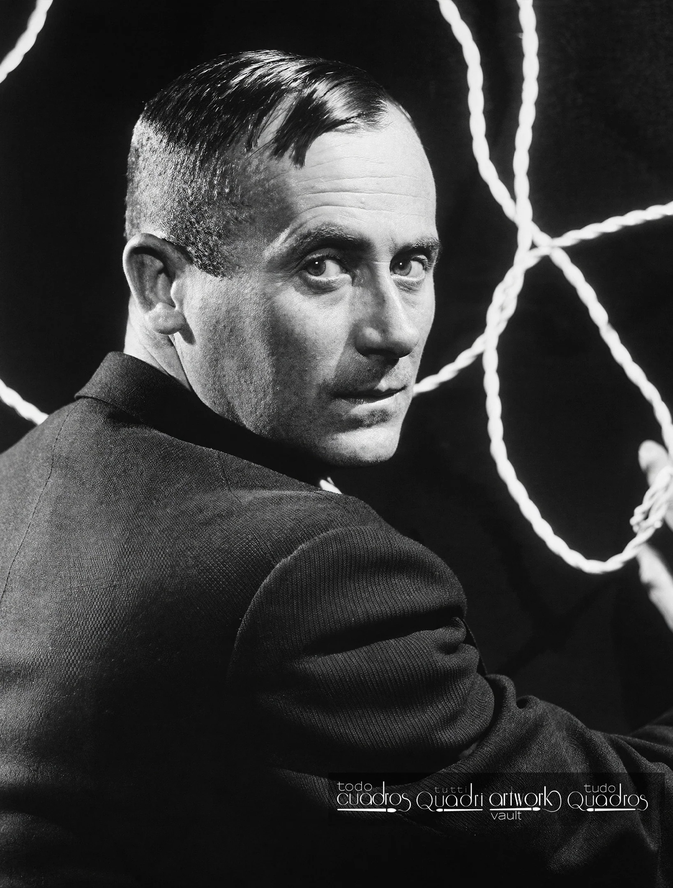

Official Poster
The official poster for the 1982 FIFA World Cup in Spain was designed by the legendary Catalan surrealist artist Joan Miró.
Miró's design broke away from traditional sports imagery, using his signature abstract style.
It features bold black lines, vibrant primary colors (red, yellow, and blue), and surrealist shapes.
The central figure is an abstract, celebratory character—often interpreted as a soccer player in a "celebratory somersault" or "leaping for joy".

Joan Miró
Joan Miró i Ferrà (20 April 1893 – 25 December 1983) was a Catalan painter, sculptor and ceramist from Spain. A museum dedicated to his work, the Fundació Joan Miró, was established in his native city of Barcelona in 1975, and another, the Fundació Pilar i Joan Miró, was established in his adoptive city of Palma, Mallorca in 1981. Earning international acclaim, his work has been interpreted as Surrealism but with a personal style, sometimes also veering into Fauvism and Expressionism. He was notable for his interest in the unconscious or the subconscious mind, reflected in his re-creation of the childlike. His difficult-to-classify works also had a manifestation of Catalan pride. In numerous interviews dating from the 1930s onwards, Miró expressed contempt for conventional painting methods as a way of supporting bourgeois society, and declared an "assassination of painting" in favour of upsetting the visual elements of established painting.